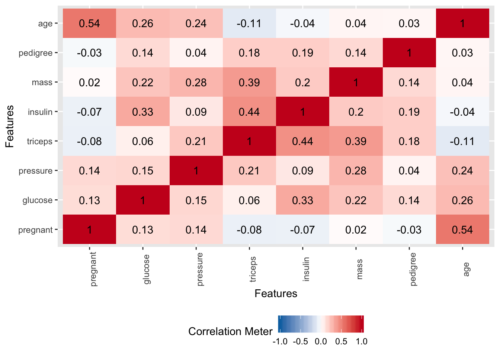

Chapter 11 Classification Example
Here we present data on Pima Indians as it relates to diabetes. This data is provided by the mlbench package. The source of the information is the National Institute of Diabetes and Digestive and Kidney Diseases which in turn was hosted on the UCI Repository of Machine Learning. The variables are:
pregnant - Number of times pregnant
glucose - Plasma glucose concentration (glucose tolerance test)
pressure - Diastolic blood pressure (mm Hg)
triceps - Triceps skin fold thickness (mm)
insulin - 2-Hour serum insulin (mu U/ml)
mass - Body mass index (weight in kg/(height in m)\^2)
pedigree - Diabetes pedigree function
age - Age (years)
diabetes - Class variable (test for diabetes)library(mlbench)
data("PimaIndiansDiabetes")
# The nqme is a little long so let's shorten it up
pm <- PimaIndiansDiabetesIf this were more a talk on exploratory practices we might spend more time investigating the relationships between the variables.
11.1 Exploratory Plots
We’ll look use some stock plots from the DataExplorer package to get a feel for the data. Look at correlations between the variables to see if any are strongly correlated with the variable we wish to predict or any other variables.
plot_correlation(pm, type="continuous")
plot_bar(pm)
plot_histogram(pm)
plot_boxplot(pm,by="diabetes")
11.2 Generalized Linear Models
Let’s pick a technique to model the data with the ultimate goal of being able to predict whether someone has diabetes or not. We’ll start with the glm function in R. We’ll take a kitchen sink approach where we predict the diabetes variable (“yes” or “no”) based on the rest of the information in the data frame.
set.seed(123)
idx <- createDataPartition(pm$diabetes, p = .8,
list = FALSE,
times = 1)
head(idx)## Resample1
## [1,] 1
## [2,] 2
## [3,] 3
## [4,] 4
## [5,] 5
## [6,] 6train <- pm[ idx,]
test <- pm[-idx,]
#
nrow(train)## [1] 615nrow(test)## [1] 153If we used the non caret approach we might do something like the following:
pm_model_glm <- glm(diabetes ~ .,
data = train, family="binomial")
pm_model_fitpreds <- predict(pm_model_glm,test,type="response")
fitpredt <- function(t) ifelse(pm_model_fitpreds > t , "pos","neg")
fitpreds <- factor(fitpredt(.4),level=levels(test$diabetes))
caret::confusionMatrix(fitpreds,
test$diabetes,
positive="pos")## Confusion Matrix and Statistics
##
## Reference
## Prediction neg pos
## neg 88 20
## pos 12 33
##
## Accuracy : 0.7908
## 95% CI : (0.7178, 0.8523)
## No Information Rate : 0.6536
## P-Value [Acc > NIR] : 0.0001499
##
## Kappa : 0.5211
##
## Mcnemar's Test P-Value : 0.2159249
##
## Sensitivity : 0.6226
## Specificity : 0.8800
## Pos Pred Value : 0.7333
## Neg Pred Value : 0.8148
## Prevalence : 0.3464
## Detection Rate : 0.2157
## Detection Prevalence : 0.2941
## Balanced Accuracy : 0.7513
##
## 'Positive' Class : pos
## library(caTools)
colAUC(pm_model_fitpreds,test$diabetes,plotROC=TRUE)
## [,1]
## neg vs. pos 0.8296226But wait, why would we do this if we have the caret package readily available. We can explore any number methods, implement K Fold Cross Validation,and get feedback on the performance measures at the same time. Let’s reframe our above work using the caret package conveniences.
ctrl <- trainControl(method = "cv",
number = 5
)
pm_glm_mod <- train(form = diabetes ~ .,
data = train,
trControl = ctrl,
metric = "Accuracy",
method = "glm",
family = "binomial",
preProc = c("center", "scale")
)
pm_glm_mod## Generalized Linear Model
##
## 615 samples
## 8 predictor
## 2 classes: 'neg', 'pos'
##
## Pre-processing: centered (8), scaled (8)
## Resampling: Cross-Validated (5 fold)
## Summary of sample sizes: 492, 492, 492, 492, 492
## Resampling results:
##
## Accuracy Kappa
## 0.7756098 0.4849025pm_glm_mod$results## parameter Accuracy Kappa AccuracySD KappaSD
## 1 none 0.7756098 0.4849025 0.04726648 0.1046417We asked for the model to be build with concern for Accuracy being the priority. This is why in the result we see an estimated 77% accuracy rate when the model is applied to out of sample data.
pm_glm_pred_labels <- predict(pm_glm_mod,test)
confusionMatrix(pm_glm_pred_labels,test$diabetes)## Confusion Matrix and Statistics
##
## Reference
## Prediction neg pos
## neg 91 26
## pos 9 27
##
## Accuracy : 0.7712
## 95% CI : (0.6965, 0.8352)
## No Information Rate : 0.6536
## P-Value [Acc > NIR] : 0.001098
##
## Kappa : 0.4536
##
## Mcnemar's Test P-Value : 0.006841
##
## Sensitivity : 0.9100
## Specificity : 0.5094
## Pos Pred Value : 0.7778
## Neg Pred Value : 0.7500
## Prevalence : 0.6536
## Detection Rate : 0.5948
## Detection Prevalence : 0.7647
## Balanced Accuracy : 0.7097
##
## 'Positive' Class : neg
## We can certainly change the scoring metric to prioritize, for example, the area under the associated ROC curve. We just need to make some adjustments to the trainControl argument list and the train argument list.
ctrl <- trainControl(method = "cv",
number = 5,
classProbs = TRUE,
summaryFunction = twoClassSummary
)
pm_glm_mod <- train(form = diabetes ~ .,
data = train,
trControl = ctrl,
metric = "ROC",
method = "glm",
family = "binomial",
preProc = c("center", "scale")
)
pm_glm_mod$results## parameter ROC Sens Spec ROCSD SensSD SpecSD
## 1 none 0.83 0.8775 0.5767442 0.03093329 0.01629801 0.0860779311.3 Random Forests
Let’s use random forests to see what results we get. Random forests are robust to over fitting and are fairly easy to implement. They can improve accuracy by fitting many trees. Each tree is fit to a resampled version of the input data (usually a bootstrap). This is known as bootstrap aggregation or “bagged” trees. At each split, the function takes a random sample of columns (the mtry argument).
The function we will use here, ranger, has three hyper parameters which could be set to a range of values which, in turn, could influence the resulting model. With glm, we didn’t really have a hyper parameter. Here is how to tell if a caret-supported model has one or more hyper parameters available for tuning:
modelLookup("ranger")## model parameter label forReg forClass
## 1 ranger mtry #Randomly Selected Predictors TRUE TRUE
## 2 ranger splitrule Splitting Rule TRUE TRUE
## 3 ranger min.node.size Minimal Node Size TRUE TRUE
## probModel
## 1 TRUE
## 2 TRUE
## 3 TRUEWe’ll switch out metric back to Accuracy
ctrl <- trainControl(method = "cv",
number = 5
)
pm_ranger_mod <- train(form = diabetes ~ .,
data = train,
trControl = ctrl,
metric = "Accuracy",
method = "ranger",
preProc = c("center", "scale")
)By default the training process will move through three different values of mtry though we could either set this explicitly in the train function or as part of the hyper parameter tuning processed mentioned previously. If we choose the latter, then we can take advantage of the fact that caret knows what hyper parameters the method supports and can cycle through possible valid values of these hyper parameters. This is accomplished via the tuneLength argument to the train function. We could use the tuneGrid argument along with a manually specified tuning grid but it’s easier to use tuneLength for now.
pm_ranger_mod## Random Forest
##
## 615 samples
## 8 predictor
## 2 classes: 'neg', 'pos'
##
## Pre-processing: centered (8), scaled (8)
## Resampling: Cross-Validated (5 fold)
## Summary of sample sizes: 492, 492, 492, 492, 492
## Resampling results across tuning parameters:
##
## mtry splitrule Accuracy Kappa
## 2 gini 0.7430894 0.4171190
## 2 extratrees 0.7495935 0.4200788
## 5 gini 0.7512195 0.4438470
## 5 extratrees 0.7609756 0.4514632
## 8 gini 0.7495935 0.4402630
## 8 extratrees 0.7609756 0.4578970
##
## Tuning parameter 'min.node.size' was held constant at a value of 1
## Accuracy was used to select the optimal model using the largest value.
## The final values used for the model were mtry = 5, splitrule =
## extratrees and min.node.size = 1.ctrl <- trainControl(method = "cv",
number = 5,
classProbs = TRUE,
summaryFunction = twoClassSummary
)
pm_ranger_mod <- train(form = diabetes ~ .,
data = train,
trControl = ctrl,
metric = "ROC",
method = "ranger",
tuneLength = 7,
preProc = c("center", "scale")
)The object can be plotted. Here we see that the max AUC of .825 occurs when mtry is 3 and the Gini criterion is used to evaluate a tree.
plot(pm_ranger_mod)
max(pm_ranger_mod[["results"]]$ROC)## [1] 0.8190116preds <- predict(pm_ranger_mod,test)
confusionMatrix(preds,test$diabetes)## Confusion Matrix and Statistics
##
## Reference
## Prediction neg pos
## neg 88 21
## pos 12 32
##
## Accuracy : 0.7843
## 95% CI : (0.7106, 0.8466)
## No Information Rate : 0.6536
## P-Value [Acc > NIR] : 0.0003018
##
## Kappa : 0.5039
##
## Mcnemar's Test P-Value : 0.1637344
##
## Sensitivity : 0.8800
## Specificity : 0.6038
## Pos Pred Value : 0.8073
## Neg Pred Value : 0.7273
## Prevalence : 0.6536
## Detection Rate : 0.5752
## Detection Prevalence : 0.7124
## Balanced Accuracy : 0.7419
##
## 'Positive' Class : neg
##